स्कन्ध 11 · अध्याय 3
श्लोक १
राजोवाच–
परस्य विष्णोरीशस्य मायिनामपि मोहिनीम् ।
मायां वेदितुमिच्छामो भगवन्तो ब्रुवन्तु नः।। १ ।।
परस्य विष्णोरीशस्य मायिनामपि मोहिनीम् ।
मायां वेदितुमिच्छामो भगवन्तो ब्रुवन्तु नः।। १ ।।
श्लोक २
नानुतृप्ये जुषन् युष्मद्वचो हरिकथामृतम् ।
संसारतापनिष्टप्तो मर्त्यस्तत्तापभेषजम्।। २ ।।
संसारतापनिष्टप्तो मर्त्यस्तत्तापभेषजम्।। २ ।।
श्लोक ३
अन्तरिक्ष उवाच–
एभिर्भूतानि भूतात्मा महाभूतैर्महाभुज ।
ससर्जोच्चावचान्यादौ स्वयमात्मप्रसिद्धये।। ३ ।।
एभिर्भूतानि भूतात्मा महाभूतैर्महाभुज ।
ससर्जोच्चावचान्यादौ स्वयमात्मप्रसिद्धये।। ३ ।।
भागवततात्पर्यनिर्णय
श्लोक ४
एवं सृष्ट्वा स भूतानि स्थविष्ठैः पञ्चधातुभिः ।
एकधा दशधाऽऽत्मानं विभजन् जुषते गुणान्।। ४ ।।
एकधा दशधाऽऽत्मानं विभजन् जुषते गुणान्।। ४ ।।
भागवततात्पर्यनिर्णय
श्लोक ५
गुणैर्गुणान् स भुञ्जान आत्मप्रद्योतितैः प्रभुः ।
मन्यमान इदं सृष्टमात्मानमिह सज्जते।। ५ ।।
मन्यमान इदं सृष्टमात्मानमिह सज्जते।। ५ ।।
भागवततात्पर्यनिर्णय
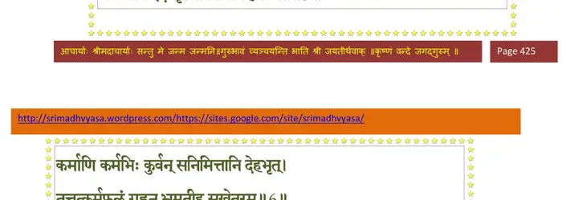
श्लोक ६
कर्माणि कर्मभिः कुर्वन् सनिमित्तानि देहभृत् ।
तत्तत्कर्मफलं गृह्णन् भ्रमतीह सुखेतरम्।। ६ ।।
तत्तत्कर्मफलं गृह्णन् भ्रमतीह सुखेतरम्।। ६ ।।
भागवततात्पर्यनिर्णय
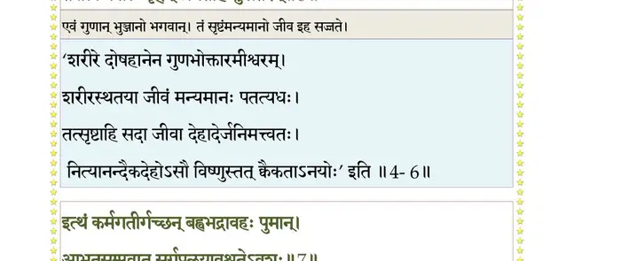
श्लोक ७
इत्थं कर्मगतीर्गच्छन् बह्वभद्रावहः पुमान् ।
आभूतसंप्लवात् स्वर्गप्रलयावश्नुतेऽवशः।। ७ ।।
आभूतसंप्लवात् स्वर्गप्रलयावश्नुतेऽवशः।। ७ ।।
भागवततात्पर्यनिर्णय
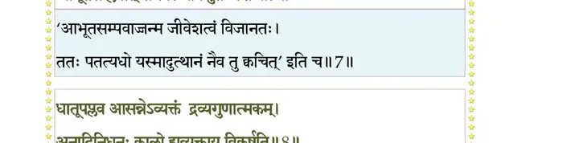
श्लोक ८
धातूपप्लव आसन्ने व्यक्तं द्रव्यगुणात्मकम् ।
अनादिनिधनः कालो ह्यव्यक्ताय विकर्षति।। ८ ।।
अनादिनिधनः कालो ह्यव्यक्ताय विकर्षति।। ८ ।।
भागवततात्पर्यनिर्णय
श्लोक ९
शतवर्षमनावृष्टिर्भविष्यत्युल्बणा भुवि ।
तत्कालोपचितोष्णार्को लोकांस्त्रीन् प्रतपिष्यति।। ९ ।।
तत्कालोपचितोष्णार्को लोकांस्त्रीन् प्रतपिष्यति।। ९ ।।
श्लोक १०
पातालतलमारभ्य सङ्कर्षणमुखानलः ।
दहन्नूर्ध्वशिखो विष्वग्वर्धते वायुनेरितः।। १० ।।
दहन्नूर्ध्वशिखो विष्वग्वर्धते वायुनेरितः।। १० ।।
श्लोक ११
संवर्तको मेघगणो वर्षति स्म शतं समाः ।
धाराभिर्हस्तिहस्ताभिर्लीयते सलिले विराट्।। ११ ।।
धाराभिर्हस्तिहस्ताभिर्लीयते सलिले विराट्।। ११ ।।
श्लोक १२
ततो विराजमुत्सृज्य वैराजः पुरुषो नृप ।
अव्यक्तं विशते सूक्ष्मं निरिन्धन इवानिलः।। १२ ।।
अव्यक्तं विशते सूक्ष्मं निरिन्धन इवानिलः।। १२ ।।
भागवततात्पर्यनिर्णय
श्लोक १३
वारिणा हृतगन्धा भूः सलिलत्वाय कल्पते ।
सलिलं तद् हृतरसं ज्योतिष्ट्वायोपकल्पते।। १३ ।।
सलिलं तद् हृतरसं ज्योतिष्ट्वायोपकल्पते।। १३ ।।
भागवततात्पर्यनिर्णय
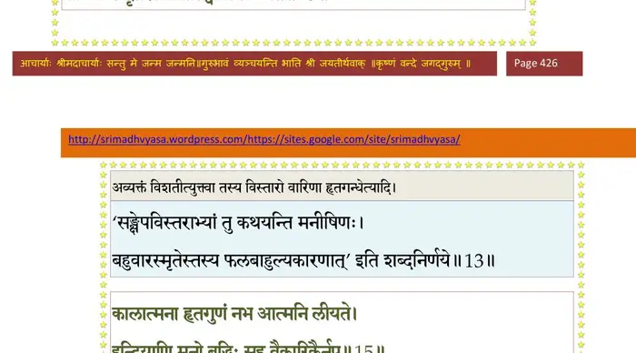
श्लोक १४
हृतरूपं तु तमसा वायौ ज्योतिः प्रलीयते ।
हृतस्पर्शोऽवकाशेन वायुर्नभसि लीयते।। १४ ।।
हृतस्पर्शोऽवकाशेन वायुर्नभसि लीयते।। १४ ।।
श्लोक १५
कालात्मना हृतगुणं नभ आत्मनि लीयते ।
इन्द्रियाणि मनो बुद्धिः सह वैकारिकैर्नृप।। १५ ।।
इन्द्रियाणि मनो बुद्धिः सह वैकारिकैर्नृप।। १५ ।।
भागवततात्पर्यनिर्णय
श्लोक १६
प्रविशन्ति ह्यहंकारं स्वगुणैरहमात्मनि।। १६ ।।
भागवततात्पर्यनिर्णय
श्लोक १७
एष माया भगवतः सर्गस्थित्यन्तकारिणी ।
त्रिवर्णा वर्णिताऽस्माभिः किं भूयः श्रोतुमिच्छसि।। १७ ।।
त्रिवर्णा वर्णिताऽस्माभिः किं भूयः श्रोतुमिच्छसि।। १७ ।।
भागवततात्पर्यनिर्णय
श्लोक १८
राजोवाच–
यथैतामैश्वरीं मायां दुस्तरामकृतात्मभिः ।
तरन्त्यञ्जः स्थूलधियो महर्ष इदमुच्यताम्।। १८ ।।
यथैतामैश्वरीं मायां दुस्तरामकृतात्मभिः ।
तरन्त्यञ्जः स्थूलधियो महर्ष इदमुच्यताम्।। १८ ।।
भागवततात्पर्यनिर्णय
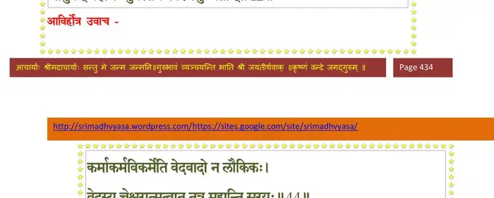
श्लोक १९
प्रबुद्ध उवाच–
कर्माण्यारभमाणानां दुःखहत्यै सुखाय च ।
पश्येत् पाकविपर्यासं मिथुनीचारिणां नृणाम्।। १९ ।।
कर्माण्यारभमाणानां दुःखहत्यै सुखाय च ।
पश्येत् पाकविपर्यासं मिथुनीचारिणां नृणाम्।। १९ ।।
श्लोक २०
नित्यार्तिदेन वित्तेन दुर्लभभेनात्ममृत्युना ।
गृहापत्याप्तपशुभिः का प्रीतिः साधितैश्चलैः।। २० ।।
गृहापत्याप्तपशुभिः का प्रीतिः साधितैश्चलैः।। २० ।।
भागवततात्पर्यनिर्णय
श्लोक २१
एवं लोकं परं विद्यान्नश्वरं कर्मनिर्मितम् ।
अतुल्यातिशयध्वंसाद् यथा मण्डलवर्तिनाम्।। २१ ।।
अतुल्यातिशयध्वंसाद् यथा मण्डलवर्तिनाम्।। २१ ।।
भागवततात्पर्यनिर्णय
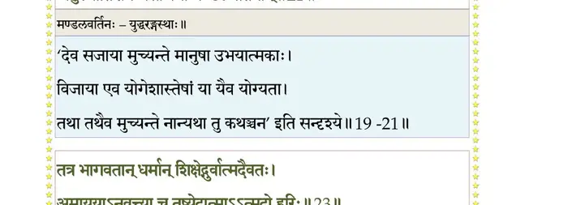
श्लोक २२
तस्माद् गुरुं प्रपद्येत जिज्ञासुः श्रेय उत्तमम् ।
शा(श)ब्दे परे च निष्णातं ब्रह्मण्युपशमाश्रयम्।। २२ ।।
शा(श)ब्दे परे च निष्णातं ब्रह्मण्युपशमाश्रयम्।। २२ ।।
श्लोक २३
तत्र भागवतान् धर्मान् शिक्षेद् गुर्वात्मदैवतः ।
अमाययाऽनुवृत्त्या च तुष्येदात्माऽऽत्मदो हरिः।। २३ ।।
अमाययाऽनुवृत्त्या च तुष्येदात्माऽऽत्मदो हरिः।। २३ ।।
भागवततात्पर्यनिर्णय
श्लोक २४
सर्वतो मनसोऽसङ्गमादौ सङ्गं च साधुषु ।
दयां मैत्रीं प्रश्रयं च भूतेष्वद्धा यथोचितम्।। २४ ।।
दयां मैत्रीं प्रश्रयं च भूतेष्वद्धा यथोचितम्।। २४ ।।
भागवततात्पर्यनिर्णय
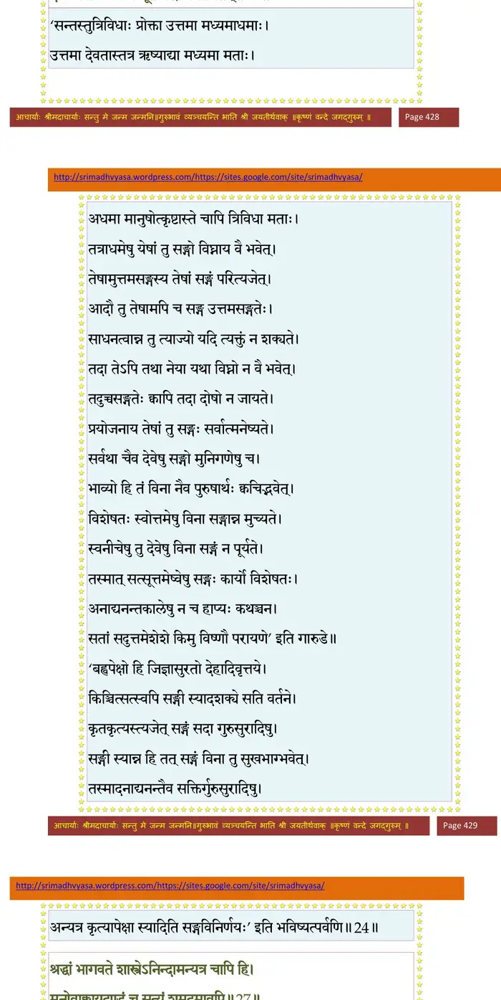
श्लोक २५
शौचं तपस्तितिक्षां च मौनं स्वाध्यायमार्जवम् ।
ब्रह्मचर्यमहिंसां च समत्वं द्वन्द्वसंज्ञयोः।। २५ ।।
ब्रह्मचर्यमहिंसां च समत्वं द्वन्द्वसंज्ञयोः।। २५ ।।
श्लोक २६
सर्वत्रात्मेश्वरान्वीक्षां कैवल्यमनिकेत(नम्)ताम् ।
विविक्तचीरवसनं सन्तोषं येन केनचित्।। २६ ।।
विविक्तचीरवसनं सन्तोषं येन केनचित्।। २६ ।।
श्लोक २७
श्रद्धां भागवते शास्त्रेऽनिन्दामन्यत्र चापि हि ।
मनोवाक्काय(वाक्कर्म)दण्डं च सत्यं शमदमावपि।। २७ ।।
मनोवाक्काय(वाक्कर्म)दण्डं च सत्यं शमदमावपि।। २७ ।।
भागवततात्पर्यनिर्णय
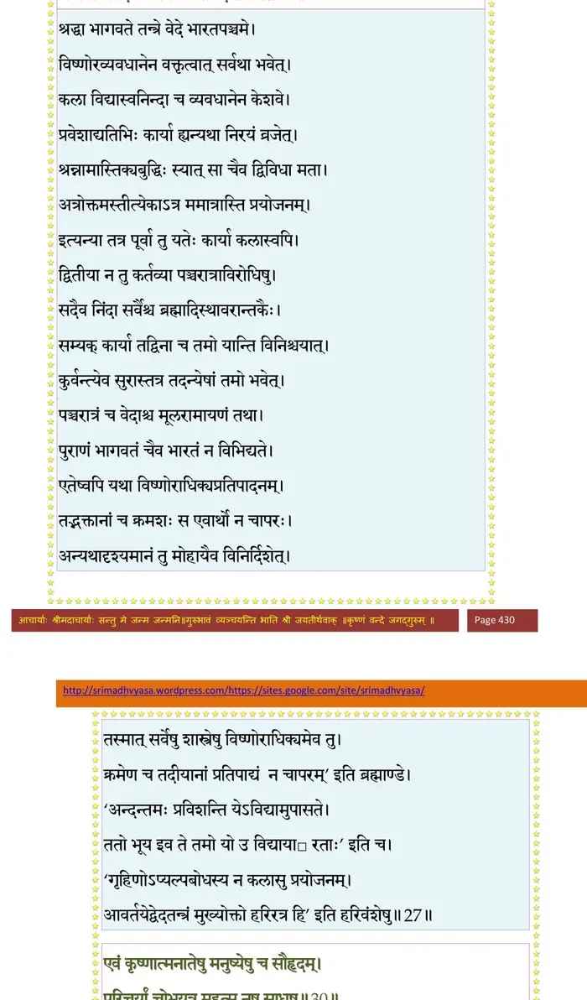
श्लोक २८
श्रवणं कीर्तनं ध्यानं हरेरद्भुतकर्मणः ।
जन्मकर्मगुणानां च तदर्थेऽखिलचेष्टितम्।। २८ ।।
जन्मकर्मगुणानां च तदर्थेऽखिलचेष्टितम्।। २८ ।।
श्लोक २९
इष्टं दत्तं तपो जप्तं पूर्तं यच्चात्मनः प्रियम् ।
दारान् सुतान् गृहान् प्राणान् परस्मै सन्निवेदयेत्।। २९ ।।
दारान् सुतान् गृहान् प्राणान् परस्मै सन्निवेदयेत्।। २९ ।।
श्लोक ३०
एवं कृष्णात्मनाथेषु मनुष्येषु च सौहृदम् ।
परिचर्यां चोभयत्र महत्सु नृषु साधुषु।। ३० ।।
परिचर्यां चोभयत्र महत्सु नृषु साधुषु।। ३० ।।
भागवततात्पर्यनिर्णय
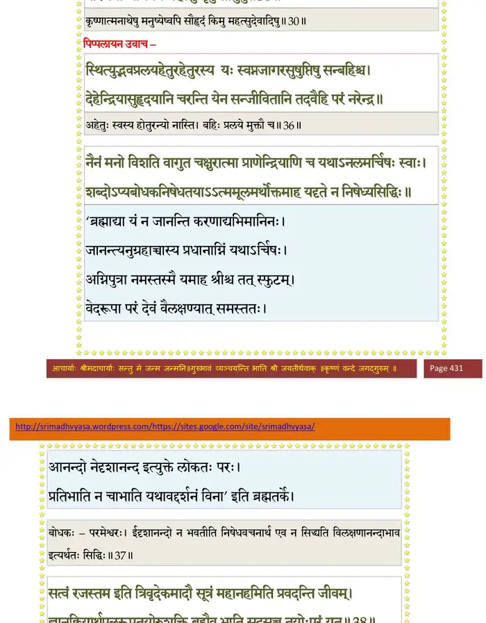
श्लोक ३१
परस्परानुकथनं पावनं भगवद्यशः ।
मिथो रतिर्मिथस्तुष्टिर्निवृत्तिर्मिथ आत्मनः।। ३१ ।।
मिथो रतिर्मिथस्तुष्टिर्निवृत्तिर्मिथ आत्मनः।। ३१ ।।
श्लोक ३२
स्मरन्तः स्मारयन्तश्च मिथोऽघौघहरं हरिम् ।
भक्ताः सञ्जातया भक्त्या बिभ्रत्युत्पुलकां तनुम्।। ३२ ।।
भक्ताः सञ्जातया भक्त्या बिभ्रत्युत्पुलकां तनुम्।। ३२ ।।
श्लोक ३३
क्वचिद् रुदन्त्यच्युतचिन्तया क्वचिद्धसन्ति नन्दन्ति वदन्त्यलौकिकाः ।
नृत्यन्ति गायन्त्यनुशीलयन्त्यजं भवन्ति तूष्णीं परमेत्य निर्वृताः।। ३३ ।।
नृत्यन्ति गायन्त्यनुशीलयन्त्यजं भवन्ति तूष्णीं परमेत्य निर्वृताः।। ३३ ।।
श्लोक ३४
इति भागवतान् धर्मान् शिक्षन् भक्त्या तदुत्थया ।
नारायणपरो मायामञ्जस्तरति दुस्तराम्।। ३४ ।।
नारायणपरो मायामञ्जस्तरति दुस्तराम्।। ३४ ।।
श्लोक ३५
राजोवाच–
नारायणाभिधानस्य ब्रह्मणः परमात्मनः ।
निष्ठामर्हथ नो वक्तुं यूयं हि ब्रह्मवित्तमाः।। ३५ ।।
नारायणाभिधानस्य ब्रह्मणः परमात्मनः ।
निष्ठामर्हथ नो वक्तुं यूयं हि ब्रह्मवित्तमाः।। ३५ ।।
श्लोक ३६
पिप्पलायन उवाच–
स्थित्युद्भवप्रलयहेतुरहेतुरस्य यः स्वप्नजागरसुषुप्तिषु सन् बहिश्च ।
देहेन्द्रियासुहृदयानि चरन्ति येन सञ्जीवितानि तदवैहि परं नरेन्द्र।। ३६ ।।
स्थित्युद्भवप्रलयहेतुरहेतुरस्य यः स्वप्नजागरसुषुप्तिषु सन् बहिश्च ।
देहेन्द्रियासुहृदयानि चरन्ति येन सञ्जीवितानि तदवैहि परं नरेन्द्र।। ३६ ।।
श्लोक ३७
नैनं मनो विशति वागुत चक्षुरात्मा
प्राणेन्द्रियाणि च यथाऽनलमर्चिषः स्वाः ।
शब्दोऽप्यबोधकनिषेधतयाऽऽत्ममूल-
मर्थोक्तमाह यदृते न निषेध्यसिद्धिः।। ३७ ।।
प्राणेन्द्रियाणि च यथाऽनलमर्चिषः स्वाः ।
शब्दोऽप्यबोधकनिषेधतयाऽऽत्ममूल-
मर्थोक्तमाह यदृते न निषेध्यसिद्धिः।। ३७ ।।
श्लोक ३८
सत्त्वं रजस्तम इति त्रिवृदेकमादौ सूत्रं महानहमिति प्रवदन्ति जीवम् ।
ज्ञानक्रियार्थफलरूपतयोरुशक्ति ब्रह्मैव भाति सदसच्च तयोः परं यत् ।। ३८ ।।
ज्ञानक्रियार्थफलरूपतयोरुशक्ति ब्रह्मैव भाति सदसच्च तयोः परं यत् ।। ३८ ।।
भागवततात्पर्यनिर्णय
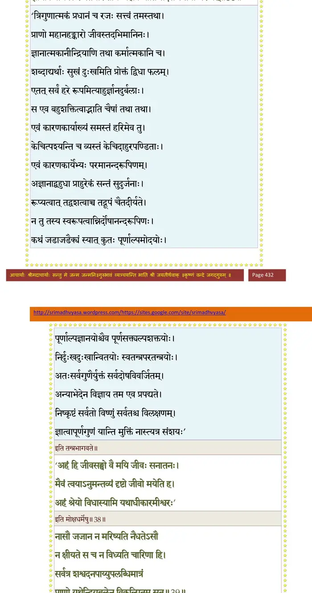
श्लोक ३९
नासौ जजान न मरिष्यति नैधतेऽसौ
न क्षीयते स च न विध्यति चारिणा हि ।
सर्वत्र शश्वदनपाय्युपलब्धिमात्रं
प्राणो यथेन्द्रियबलेन विकल्पितं सत्।। ३९ ।।
न क्षीयते स च न विध्यति चारिणा हि ।
सर्वत्र शश्वदनपाय्युपलब्धिमात्रं
प्राणो यथेन्द्रियबलेन विकल्पितं सत्।। ३९ ।।
भागवततात्पर्यनिर्णय
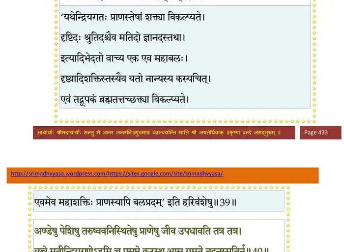
श्लोक ४०
अण्डेषु पेशिषु तरुष्ववनिस्थितेषु
प्राणेन जीव उपधावति तत्र तत्र ।
छन्ने मतीन्द्रियगुणेऽहमि च प्रसुप्ते
कूटस्थ आस यमृते तदनुस्मृतिर्न।। ४० ।।
प्राणेन जीव उपधावति तत्र तत्र ।
छन्ने मतीन्द्रियगुणेऽहमि च प्रसुप्ते
कूटस्थ आस यमृते तदनुस्मृतिर्न।। ४० ।।
भागवततात्पर्यनिर्णय
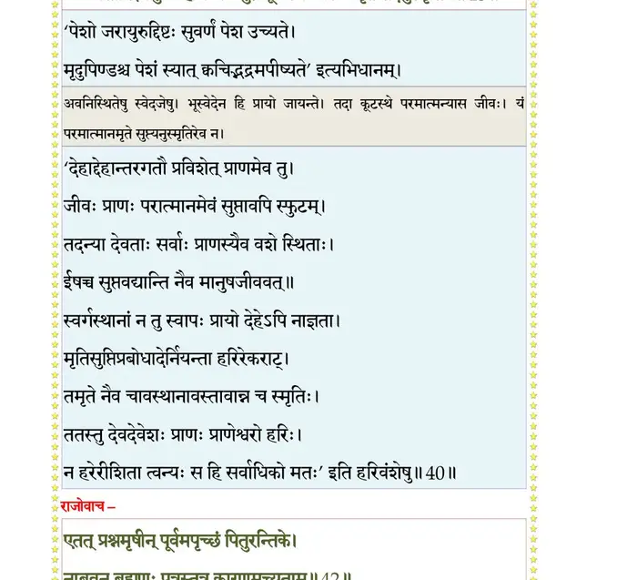
श्लोक ४१
यर्ह्यब्जनाभचरणेषणयोरुभक्त्या चेतो
मलानि विधमेद् गुणकर्मजानि ।
तस्मिन् विशुद्ध उपलभ्यत आत्मतत्वं
साक्षाद् यथाऽमलदृशौ सवितृप्रकाशः।। ४१ ।।
मलानि विधमेद् गुणकर्मजानि ।
तस्मिन् विशुद्ध उपलभ्यत आत्मतत्वं
साक्षाद् यथाऽमलदृशौ सवितृप्रकाशः।। ४१ ।।
श्लोक ४२
राजोवाच–
कर्मयोगं वदत नः पुरुषो येन संस्कृतः ।
विधूयेहाशु कर्माणि नैष्कर्म्यं विन्दते परम्।। ४२ ।।
कर्मयोगं वदत नः पुरुषो येन संस्कृतः ।
विधूयेहाशु कर्माणि नैष्कर्म्यं विन्दते परम्।। ४२ ।।
श्लोक ४३
एवं प्रश्नमृषीन् पूर्वमपृच्छं पितुरन्तिके ।
नाब्रुवन् ब्रह्मणः पुत्रास्तत्र कारणमुच्यताम्।। ४३ ।।
नाब्रुवन् ब्रह्मणः पुत्रास्तत्र कारणमुच्यताम्।। ४३ ।।
श्लोक ४४
आविर्होत्र उवाच–
कर्माकर्मविकर्मेति वेदवादो न लौकिकः ।
वेदस्य चेश्वरात्मत्वात् तत्र मुह्यन्ति सूरयः।। ४४ ।।
कर्माकर्मविकर्मेति वेदवादो न लौकिकः ।
वेदस्य चेश्वरात्मत्वात् तत्र मुह्यन्ति सूरयः।। ४४ ।।
भागवततात्पर्यनिर्णय
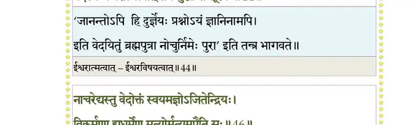
श्लोक ४५
परोक्षवादो वेदोऽयं बालानामनुशासनम् ।
कर्ममोक्षाय कर्माणि विधत्ते ह्यगदं यथा।। ४५ ।।
कर्ममोक्षाय कर्माणि विधत्ते ह्यगदं यथा।। ४५ ।।
श्लोक ४६
नाऽऽचरेद् यस्तु वेदोक्तं स्वयमज्ञोऽजितेन्द्रियः ।
विकर्मणा ह्यधर्मेण मृत्योर्मृत्युमुपैति सः।। ४६ ।।
विकर्मणा ह्यधर्मेण मृत्योर्मृत्युमुपैति सः।। ४६ ।।
भागवततात्पर्यनिर्णय
श्लोक ४७
वेदोक्तमेव कुर्वाणो निःसङ्गोऽर्पितमीश्वरे ।
नैष्कर्म्यां लभते सिद्धिं रोचनार्थं फलश्रुतिः।। ४७ ।।
नैष्कर्म्यां लभते सिद्धिं रोचनार्थं फलश्रुतिः।। ४७ ।।
भागवततात्पर्यनिर्णय
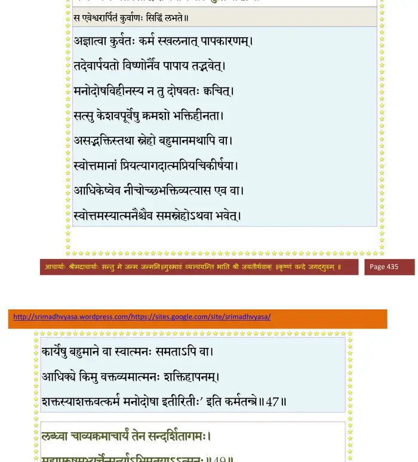
श्लोक ४८
य आशु हृदयग्रन्थिं निर्जिहीर्षुः परात्मनः ।
विधिनोपचरेद् देवं तन्त्रोक्तेन च केशवम्।। ४८ ।।
विधिनोपचरेद् देवं तन्त्रोक्तेन च केशवम्।। ४८ ।।
श्लोक ४९
लब्ध्वा चाव्यग्रमाचार्यं तेन सन्दर्शितागमः ।
महापुरुषमभ्यर्चेन्मूर्त्याऽभिमतयाऽऽत्मनः।। ४९ ।।
महापुरुषमभ्यर्चेन्मूर्त्याऽभिमतयाऽऽत्मनः।। ४९ ।।
भागवततात्पर्यनिर्णय
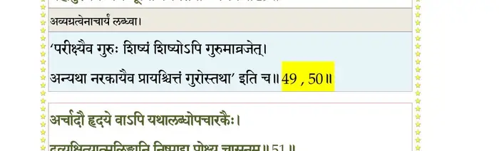
श्लोक ५०
शुचिः संमुख आसीनः प्राणसंयमनादिभिः ।
पिण्डं संशोध्य संन्यासकृतरक्षोऽर्चयेद् हरिम्।। ५० ।।
पिण्डं संशोध्य संन्यासकृतरक्षोऽर्चयेद् हरिम्।। ५० ।।
श्लोक ५१
अर्चादौ हृदये वापि यथालब्धोपचारकैः ।
द्रव्यक्षित्यात्मलिङ्गानि निष्पाद्य प्रोक्ष्य चासनम्।। ५१ ।।
द्रव्यक्षित्यात्मलिङ्गानि निष्पाद्य प्रोक्ष्य चासनम्।। ५१ ।।
भागवततात्पर्यनिर्णय
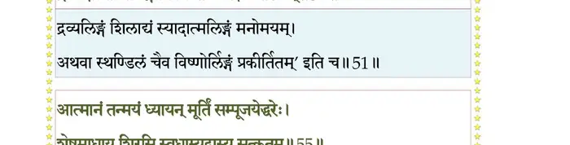
श्लोक ५२
पाद्यादीनुपकल्प्याथ सन्निधाय समाहितः ।
हृदयादिकृतन्यासो मूलमन्त्रेण चार्चयेत्।। ५२ ।।
हृदयादिकृतन्यासो मूलमन्त्रेण चार्चयेत्।। ५२ ।।
श्लोक ५३
साङ्गोपाङ्गां सपार्षदां तां तां मूर्तिं स्वमन्त्रतः ।
पाद्यार्ध्याचमनीयाद्यैः स्नानवासोविभूषणैः।। ५३ ।।
पाद्यार्ध्याचमनीयाद्यैः स्नानवासोविभूषणैः।। ५३ ।।
श्लोक ५४
गन्धमाल्याक्षतस्रग्भिर्धूपदीपोपहारकैः ।
साङ्गं सम्पूज्य विधिवत् स्तवैःस्तुत्वा नमेद् हरिम्।। ५४ ।।
साङ्गं सम्पूज्य विधिवत् स्तवैःस्तुत्वा नमेद् हरिम्।। ५४ ।।
श्लोक ५५
आत्मानं तन्मयं ध्यायन् मूर्तिं सम्पूजयेद् हरेः ।
शेषमाधाय शिरसि स्वधाम्य्नुद्वास्य सत्कृतम्।। ५५ ।।
शेषमाधाय शिरसि स्वधाम्य्नुद्वास्य सत्कृतम्।। ५५ ।।
भागवततात्पर्यनिर्णय
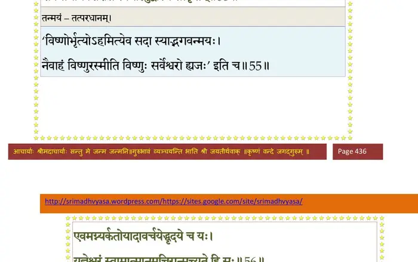
श्लोक ५६
एवमग्न्यर्कतोयादावर्चयेद् हृदये च यः ।
यज्ञेश्वरं स्वमात्मानमचिरान्मुच्यते हि सः।। ५६ ।।
यज्ञेश्वरं स्वमात्मानमचिरान्मुच्यते हि सः।। ५६ ।।
भागवततात्पर्यनिर्णय
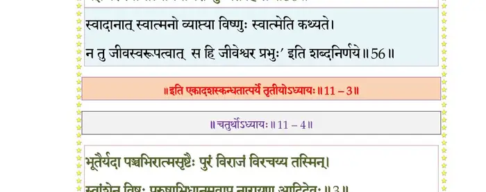
।। इति श्रीमद्भागवते एकादशस्कन्धे तृतीयोऽध्यायः ।।